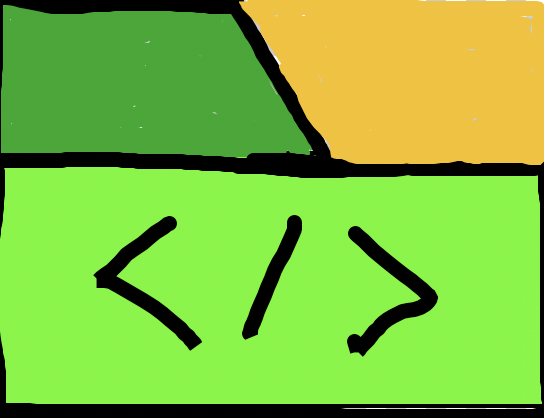

UNO Classic Rules:
You and your opponents will be starting off with 7 cards. The goal is to be the first to
remove all your cards. If you remove your 2nd to last card, you MUST shout UNO or draw 2 cards
for a missed UNO shout. Cards in this UNO game will consist of number cards (0-9), action cards
(SKIP, REVERSE, DRAW2), and WILD cards (normal WILD, DRAW4WILD).
When your turn comes about, you can remove any card in your deck that matches the color, face, or
any wild cards. If you don't have any, you need to draw a card. After drawing a card, if you have no
playable card, you pass automatically. If you draw a playable card, you can play it or pass.
Number cards don't have any effects. REVERSE reverses the order, SKIP skips the next player's turn,
DRAW2 forces the next player to pick up 2 cards. WILD allows player to change color of their desire, and
DRAW4WILD allows changing of color and forces next player to pick up 4 cards. However, DRAW4WILD can be challenged.
If the player of the DRAW4WILD has a previously played color and the victim challenges the DRAW4WILD, the player of
it will have to DRAW4WILD instead. If the player doesn't have a previously played color and victim challenges it, they
will FAIL the challenge and have to pick up 6 cards instead. If challenge isn't taken, victim will pick up 4 cards.